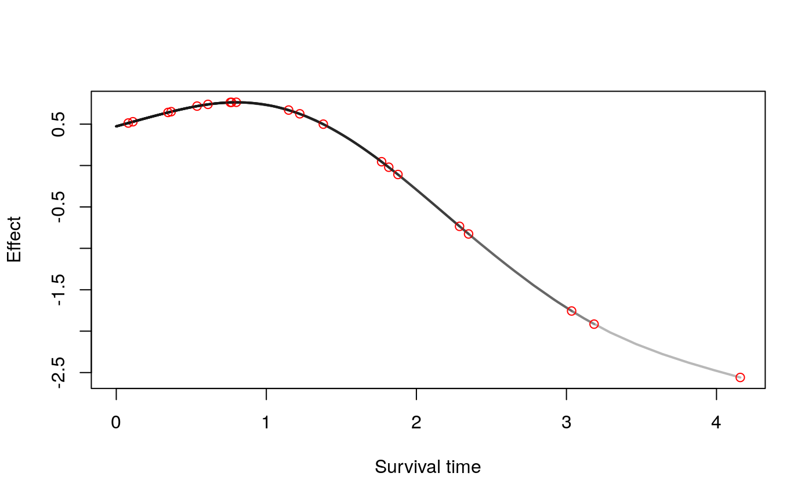

surv.transform.RdThis function takes a bamlss.frame and computes design matrices of model terms
based on a time grid for time-dependent structured additive predictors in a survival context.
Note that this transformer function is usually used internally by function bamlss
and is the default transformer function using the cox_bamlss family object.
The time grid design matrices can be used to construct the full structured additive predictor for each time point. This way it is possible to solve the integrals that are part of, e.g., a Newton-Raphson updating scheme, numerically.
See the example section on how to extract the time grid design matrices.
surv.transform(x, y, data, family, subdivisions = 100, timedependent = "lambda", timevar = NULL, idvar = NULL, is.cox = FALSE, alpha = 0.1, ...)
| x | The |
|---|---|
| y | The model response, as returned from function |
| data | The data.frame that should be used for setting up all matrices. |
| family | A bamlss family object, see |
| subdivisions | How many time points should be created for each individual. |
| timedependent | A character vector specifying the names of parameters in |
| timevar | A character specifying the name of the survival time variable in the data set. |
| idvar | Depending on the type of data set, this is the name of the variable specifying identifier of individuals. |
| is.cox | Should the |
| alpha | A value for the intercept of a parameter names alpha. Typically the association parameter of a longitudinal and survival process in a joint model. |
| … | Arguments passed to function |
A bamlss.frame including the time grid design matrices.
library("survival") set.seed(111) ## Simulate survival data. d <- simSurv(n = 20) ## Formula of the survival model, note ## that the baseline is given in the first formula by s(time). f <- list( Surv(time, event) ~ s(time) + s(time, by = x3), gamma ~ s(x1) + s(x2) ) ## Create the bamlss.frame. bf <- bamlss.frame(f, family = "cox", data = d) ## Lambda is the time-dependent parameter. print(bf)#> 'bamlss.frame' structure: #> ..$ call #> ..$ model.frame #> ..$ formula #> ..$ family #> ..$ terms #> ..$ x #> .. ..$ lambda #> .. .. ..$ formula #> .. .. ..$ fake.formula #> .. .. ..$ terms #> .. .. ..$ model.matrix #> .. .. ..$ smooth.construct #> .. ..$ gamma #> .. .. ..$ formula #> .. .. ..$ fake.formula #> .. .. ..$ terms #> .. .. ..$ model.matrix #> .. .. ..$ smooth.construct #> ..$ y #> .. ..$ Surv(time, event)## Apply the transformer. bf <- with(bf, surv.transform(x, y, data = model.frame, family = family, is.cox = TRUE, subdivisions = 25)) ## Extract the time grid design matrix for term s(time). X <- bf$x$lambda$smooth.construct[["s(time)"]]$fit.fun_timegrid(NULL) dim(X)#> [1] 500 9## Compute fitted values for each time point. grid <- attr(bf$y[[1]], "grid") gdim <- c(length(grid), length(grid[[1]])) b <- runif(ncol(X)) fit <- X# NOT RUN { # }fit <- matrix(fit, nrow = gdim[1], ncol = gdim[2], byrow = TRUE) plot(as.vector(fit) ~ unlist(grid), type = "n", xlab = "Survival time", ylab = "Effect")for(j in seq_along(grid)) { lines(fit[j, ] ~ grid[[j]], lwd = 2, col = rgb(0.1, 0.1, 0.1, alpha = 0.3)) points(grid[[j]][gdim[2]], fit[j, gdim[2]], col = "red") }